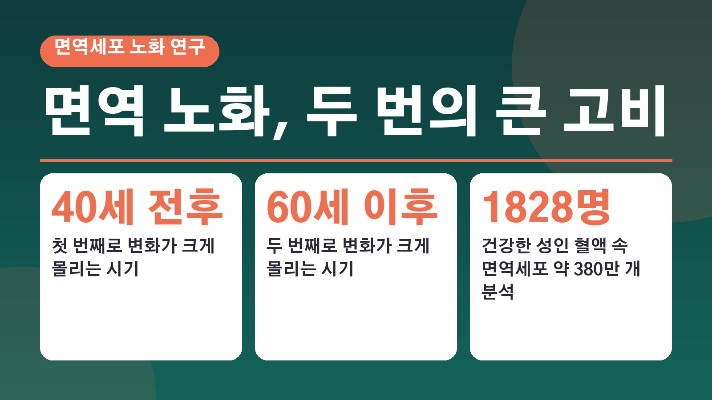
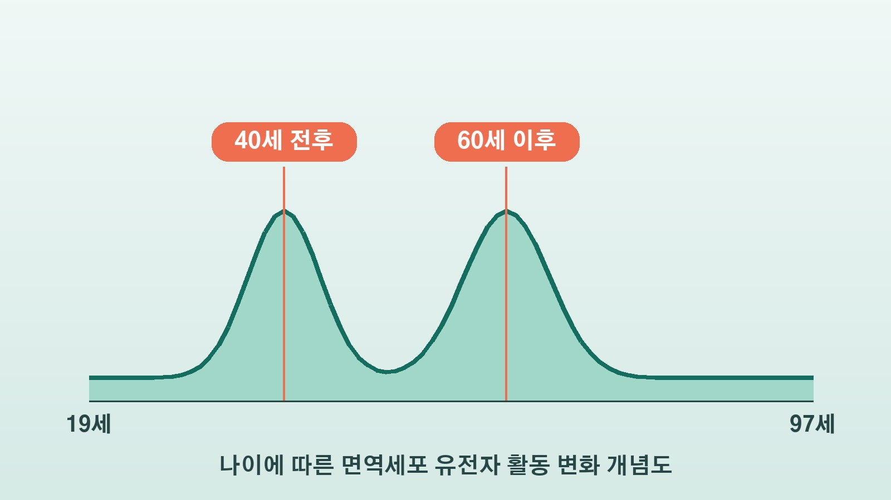

면역세포는 40세 전후와 60세 이후 두 번 크게 바뀐다, 1828명 혈액 분석에서 드러난 남녀 차이

마흔 무렵부터 몸이 예전 같지 않다는 말, 주변에서 자주 들으시죠. 그런데 면역세포도 나이가 들면서 천천히 고르게 늙는 게 아니라 특정 시기에 크게 변한다는 연구 결과가 나왔어요. 그 시기가 40세 전후와 60세 이후라고 하는데요, 연구가 무엇을 보여 줬고 어디까지가 아직 모르는 부분인지 정리해 볼게요.
면역 노화는 일정한 속도로 오지 않는다
싱가포르 듀크싱가포르국립대 의과대학 연구팀은 면역세포의 노화가 꾸준한 속도로 진행되지 않고, 빠르게 변하는 시기가 따로 있다는 분석을 국제학술지 네이처 커뮤니케이션즈에 발표했어요.
연구팀이 나이에 따라 면역세포의 유전자 활동이 어떻게 늘고 줄어드는지 살펴봤더니 변화가 크게 몰리는 시점이 두 번 나타났어요. 첫 번째가 40세 전후, 두 번째가 60세 이후입니다. 연구팀은 이 두 시기에 세포가 제 기능을 하는 데 바탕이 되는 RNA와 단백질 합성 관련 유전자의 기능이 가장 크게 떨어졌다고 설명했어요.
380만 개 면역세포를 들여다본 연구
분석 대상은 19세부터 97세까지 건강한 성인 1828명의 혈액에서 얻은 면역세포 약 380만 개예요. 여성이 1021명, 남성이 807명이었습니다.

연구팀이 직접 사람을 모집한 게 아니라 여러 공개 연구 자료를 모아 하나로 합친 방식이었고, 싱가포르인을 포함한 아시아인도 대상에 들어갔어요. 이런 종류의 연구 가운데 규모가 크고 다양한 편에 속한다는 게 연구팀의 설명입니다.
40세 전후에는 CD4, 60세 이후에는 CD8 T세포
두 시기 모두 변화의 중심에는 T세포가 있었어요. T세포는 몸이 병균과 싸우도록 돕는 백혈구의 한 종류인데, 시기마다 크게 변한 T세포의 종류가 달랐습니다.
40세 전후에는 CD4 T세포의 변화가 가장 두드러졌어요. CD4 T세포는 다른 면역세포의 활동을 돕고 조율하는 역할을 합니다. 60세 이후에는 CD8 T세포가 두 번째 큰 변화의 중심이었고, 특히 처음 만나는 병균에 대응할 준비가 된 나이브 CD8 T세포의 비율이 줄었어요.
남성과 여성은 변하는 방식이 달랐다
변화의 모습은 남녀가 꽤 달랐어요. 남성은 CD4 T세포에서 세포의 에너지 대사와 관련된 유전자 활동이 이른 시기에 크게 출렁이는 모습을 보였습니다.
여성은 CD8 T세포의 활성화가 오래 이어졌고, 나이가 많아진 뒤에 CD4 T세포와 NK세포, B세포에서 노화 신호가 나타났어요. 연구팀은 이 자료로 몸의 생물학적 나이를 추정하는 인공지능 모델도 만들었는데, 남녀를 나눠 만든 모델이 남녀를 합친 모델보다 더 정확했다고 해요. 연구팀은 이런 차이가 여성에게 자가면역질환이 더 많이 나타나는 이유를 이해하는 실마리가 될 수 있다고 보고 있습니다.
이 연구로 알 수 있는 것과 아직 모르는 것
면역 노화가 진행되면 감염에 더 취약해지고 백신 효과가 떨어질 수 있다는 점은 기존 연구에서도 알려져 있었어요. 연구에 참여한 듀크싱가포르국립대 의과대학 교수도 T세포 기능의 변화가 나이 든 사람이 감염과 염증성 질환에 더 취약한 이유를 설명하는 데 도움이 될 수 있다고 말했습니다.
다만 이번에 확인된 유전자 활동 변화가 실제 면역력 저하나 특정 증상으로 이어지는지는 이 연구에서 확인되지 않았어요. 또 여러 나이대의 사람을 한 번에 비교한 연구라서, 모든 사람이 정확히 40세와 60세에 같은 변화를 겪는다는 뜻은 아닙니다. 한 사람에게서도 같은 변화가 나타나는지는 오랜 기간 같은 사람을 따라가는 연구가 더 필요하다고 해요.
참고한 기사: 농민신문 40대부터 확 늙는다고, 면역세포도 두번 고비 온다(2026.10.18), 듀크싱가포르국립대 의과대학 보도자료 면역 노화는 40세와 60세 무렵 빨라진다(2026.10.01), 네이처 커뮤니케이션즈 논문 초록
태그
면역노화 면역세포 T세포 CD4T세포 CD8T세포 노화연구 40대건강 60대건강 자가면역질환 생물학적나이